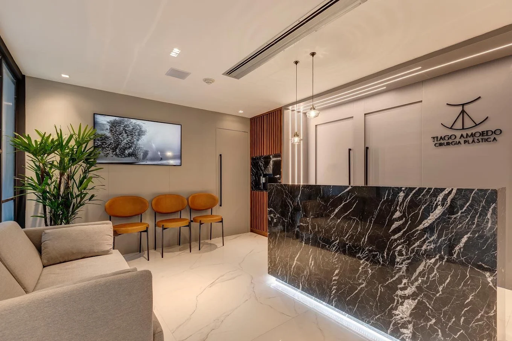

Excelência em Cirurgia Plástica
A Arte de Esculpir
sua Melhor Versão.
Referência em Lipo HD e Contorno Corporal em Salvador. Segurança, inovação tecnológica e resultados que harmonizam com a sua essência.
Iniciar meu PlanejamentoDr. Tiago Amoedo
Especialista em Contorno Corporal
Com uma trajetória pautada na excelência técnica e na inovação, o Dr. Tiago Amoedo se consolidou como uma das principais referências em cirurgia plástica de alta performance na Bahia.
Sua filosofia de trabalho une o refinamento estético à precisão cirúrgica, utilizando os protocolos mais avançados de segurança para garantir resultados naturais, elegantes e duradouros.
- Membro da Sociedade Brasileira de Cirurgia Plástica (SBCP)
- Expertise em Lipo HD (Alta Definição)
- Tecnologias Avançadas (Vaser® / Renuvion®)
Estrutura Exclusiva
Nossa clínica na Pituba foi projetada para oferecer máximo conforto, privacidade e segurança. Contamos com tecnologia de ponta para avaliações precisas e um ambiente acolhedor que reflete o padrão de excelência do nosso atendimento.

Especialidades
Procedimentos Premium


Jornal da Beleza
PÓS-OPERATÓRIO
A importância da Terapia Hiperbárica na Lipo HD
Descubra como a tecnologia com oxigênio 100% puro acelera a sua recuperação...
Ler artigo completoTECNOLOGIA
Renuvion: O segredo para combater a flacidez
Entenda como essa tecnologia age na retração da pele durante a cirurgia...
Ler artigo completoPLANEJAMENTO
Como se preparar para a sua primeira consulta
Dicas essenciais para alinhar expectativas e tirar o máximo de dúvidas...
Ler artigo completoHistórias de Transformação
"Fiz minha Lipo HD há 4 meses e minha autoestima é outra. O Dr. Tiago desenhou meu corpo como um artista. A segurança que ele passa na consulta não tem preço."
— Mariana S.
"O diferencial para mim foi o pós-operatório. Fiz mastopexia e a inclusão das sessões de câmara hiperbárica zeraram minha dor. Minha cicatriz está praticamente invisível."
— Ana Lúcia S.
"Profissionalismo ímpar desde a recepção. O consultório na Pituba é maravilhoso. Ele foi 100% sincero sobre o que era possível na minha abdominoplastia e entregou mais."
— Juliana C.
"Troquei de cirurgião aos 45 do segundo tempo ao conhecer o Dr. Tiago. O uso do Renuvion deixou minha pele firme de novo. Equipe nota mil."
— Carla M.